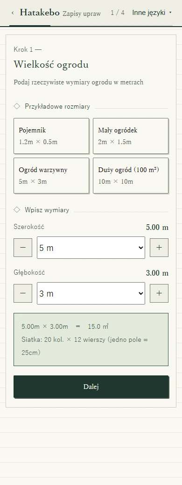
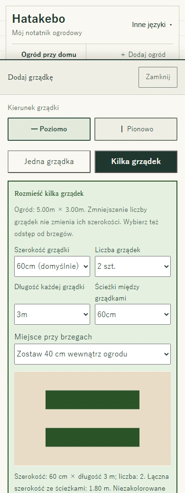
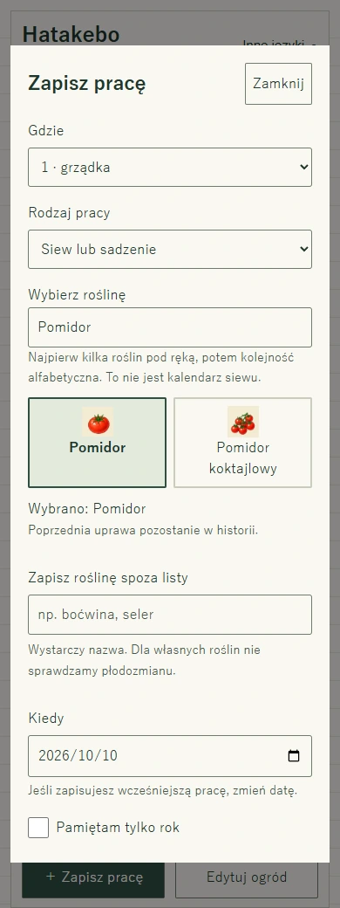
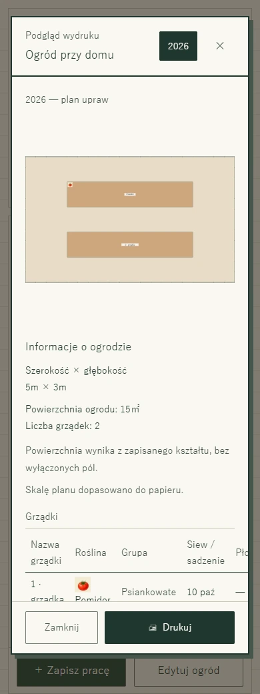
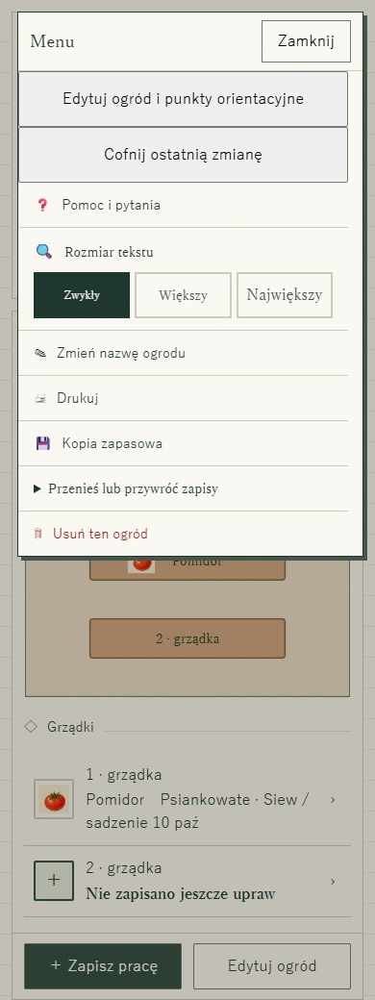

Pierwszy ogród · Poradnik ze zrzutami ekranu
Jak zaplanować warzywnik i rozmieścić grządki
Zacznij od planu. Dodaj grządki. Zapisz to, co rośnie.
Nie musisz uzupełniać wszystkiego naraz. Przejdziemy od pustego notatnika do dwóch grządek z pomidorem na jednej z nich. Te same przyciski działają na telefonie i komputerze — bez przeciągania.
Taki ogród utworzymy
Ogród przy domu o wymiarach 5 × 3 m, z dwiema poziomymi grządkami. Na pierwszej zapiszemy pomidora, a drugą zostawimy pustą. Wymiary, roślina i data służą pokazaniu obsługi, nie są zaleceniem uprawowym.
Otwórz Hatakebo w nowej karcieZostaw poradnik otwarty i wypróbuj kolejne kroki.

Zanim zaczniesz
Zmierz szerokość i głębokość powierzchni, którą możesz wykorzystać. Nie wliczaj wspólnych alejek do swojego ogrodu. Zostaw miejsce na przejście i wygodny dostęp do roślin. Na działce uwzględnij rzeczywiste granice i zasady ogrodu działkowego.
Krok 1
Podaj wielkość i nazwę ogrodu
- Otwórz Hatakebo i wybierz Utwórz ogród.
- Ustaw Szerokość na 5 m, a Głębokość na 3 m. Wybierz Dalej. Dla własnego ogrodu użyj rzeczywistych wymiarów.
- W przykładzie zostaw prostokątny kształt. Jeśli Twój ogród jest nieregularny, dotknij nieużywanych pól, aby je wyłączyć. Wybierz Dalej.
- Dodaj punkty orientacyjne albo przejdź dalej bez nich.
- Wpisz Ogród przy domu, wybierz Utwórz ten ogród, a potem Otwórz mój ogród. Krótkie wprowadzenie możesz przejść lub zamknąć przyciskiem Pomiń.

Krok 2
Zostaw miejsce na grządki i ścieżki
- W pustym ogrodzie wybierz ＋ Dodaj grządkę.
- Wybierz Poziomo, a potem Kilka grządek.
- Ustaw poniższe wymiary i sprawdź podgląd.
- Przewiń w dół i wybierz Utwórz grządki: 2 w tym układzie. Jeśli trwa edycja, wybierz Zakończ edycję.
- Szerokość grządki
- 60 cm
- Liczba grządek
- 2
- Długość każdej grządki
- 3 m
- Ścieżka między grządkami
- 60 cm
- Odstęp od brzegów
- 40 cm wewnątrz ogrodu
Dwie grządki po 60 cm i ścieżka 60 cm zajmują 1,8 m. Z odstępami po 40 cm to 2,6 m, więc mieszczą się w głębokości 3 m. W drugim kierunku długość 3 m i dwa odstępy po 40 cm dają 3,8 m — mniej niż szerokość 5 m.

Krok 3
Zapisz posadzoną roślinę
- Wybierz ＋ Zapisz pracę. W polu Gdzie wskaż pierwszą grządkę, oznaczoną w przykładzie jako 1 · grządka.
- Jako Rodzaj pracy wybierz Siew lub sadzenie.
- Wyszukaj Pomidor i wybierz jego obrazek. Możesz też rozpocząć od grządki na planie lub liście.
- Sprawdź pole Kiedy. Początkowo jest tam dzisiejsza data. Zmień ją, jeśli sadzenie było wcześniej.
- Przewiń w dół i wybierz Zapisz wpis. Pomidor pojawi się na planie. Druga grządka może zostać pusta.
Kolejność roślin ułatwia wyszukiwanie, nie wskazuje terminu siewu. Aby zapisać kompost, nawóz zielony lub notatkę, wróć do Zapisz pracę i wybierz odpowiedni rodzaj. Kolejna uprawa na tej samej grządce nie usuwa poprzedniej z historii.

Krok 4
Zabierz plan do ogrodu
Wydrukuj plan ogrodu i listę upraw na A4 poziomo, z kratką 5 mm na odręczne dopiski. Druk kolorowy lub czarno-biały wybierzesz w ustawieniach drukarki. Tytuł i memo są opcjonalne. Historia prac i zapisy nawożenia nie są drukowane.
- Wybierz Menu → Drukuj.
- Sprawdź nazwę ogrodu, rok, plan i listę grządek.
- Wybierz Drukuj na dole. W oknie przeglądarki lub urządzenia wybierz drukarkę albo Zapisz jako PDF, jeśli ta opcja jest dostępna.
Plan mieści się na kartce — nie jest drukowany w rzeczywistym rozmiarze ogrodu. Wymiary i powierzchnia pojawiają się obok lub pod nim.

Krok 5
Zrób kopię i przygotuj pracę bez internetu
- Wybierz Menu → Kopia zapasowa i upewnij się, że plik został pobrany. Zachowaj kopię na innym urządzeniu lub nośniku.
- Na urządzeniu docelowym wybierz Przenieś lub przywróć zapisy → Wczytaj kopię zapasową. Import zastępuje jego obecne dane — najpierw je zabezpiecz, jeśli są potrzebne.
- Przed wyjściem otwórz polską aplikację z internetem i poczekaj na Gotowe do pracy bez internetu. Potem otworzysz ją ponownie i zapiszesz prace na tym samym urządzeniu i w tej samej przeglądarce bez zasięgu.
Zapisy zostają w przeglądarce, bez kopii na serwerze Hatakebo i automatycznej synchronizacji. Nie czyść danych witryny. Wydruk lub PDF jest do czytania, nie do przywracania danych w aplikacji.
